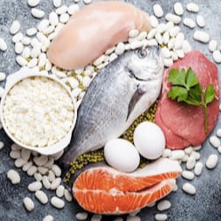

Man Plus
2000 р.
ОПИСАНИЕ:
Man Plus - это продукт, который производится по специальной формуле Doctorem в качестве эффективного решения основных физических проблем, с которыми сталкиваются мужчины, улучшая качество их жизни.ОБЛАСТЬ ПРИМЕНЕНИЯ:
- снижение симптомов слабости и утомляемости;
- снижение уровня оксидантов в тканях и стенках сосудов;
- улучшение эрекции за счет расширения сосудов;
- ингибирование доброкачественной гиперплазии предстательной железы;
- улучшение работы почек и мочевыводящих путей.

СРОК ЭФФЕКТИВНОГО ВОЗДЕЙСТВИЯ:
48 часа с момента нанесения.СОДЕРЖИМОЕ УПАКОВКИ:
30 пластырей 130х94 мм.СОСТАВ АКТИВНОГО ВЕЩЕСТВА:
ЗОНЫ НАНЕСЕНИЯ:
Ниже пупка в районе паховой области. Достаточно наносить один пластырь за раз. В случае необходимости нанесения на несколько зон, пластырь можно разрезать на части. Замену пластыря рекомендуем производить через каждые 2 дня.ОПИСАНИЕ АКТИВНЫХ ЭЛЕМЕНТОВ

Цинк
- является одним из важнейших минералов, поскольку он не вырабатывается в организме человека, его необходимо получать извне.Цинк имеет много функций, таких как поддержка иммунной системы, укрепление волос, ногтей, поддержание здоровья кожи, увеличение минеральной плотности костной ткани, поддержка лечения глазных заболеваний.

Имбирь
- его польза во многом связана с его антиоксидантными и противовоспалительными свойствами, а также наличием таких терапевтических соединений, как гингерол, шогаол, парадол и зингерон. На самом деле, из имбиря можно выделить более 100 соединений, которые наделяют его антиоксидантными, противораковыми и нейропротекторными свойствами.
Женьшень
- является самым известным в мире адаптогеном (повышает способность организма сопротивляться неблагоприятным факторам). С древних времен применяется на дальнем Востоке и в Китае в качестве психостимулирующего и общетонизирующего средства.Благодаря своим свойствам растение активно применяется для активизации либидо и улучшения эрекции.

Омега-3
Уникальные свойства Омега-3 кислот позволяют представителям сильного пола дольше сохранить мужское здоровье, силу, предотвратить развитие ишемической болезни сердца, заболеваний сосудов. Они повышают сопротивляемость мужского организма к инфекциям, психологическим и физическим нагрузкам, стрессу.Корень мака
- прием корня маки увеличивает концентрацию сперматозоидов — их количество на миллилитр семенной жидкости. А это один из показателей, влияющий на мужскую фертильность.
L-аргинин
- ценнейшая аминокислота способствует улучшению эректильной функции, полового влечения (у мужчин и женщин), повышению активности спермы и увеличению содержания в ней сперматозоидов. L-аргинин для сердечно-сосудистой системы способствует снижению повышенного артериального давления, образования атеросклеротических бляшек. L-Аргинин в спорте участвует в формировании мышечной ткани, улучшает питание мышц.Карликовая пальма (Serenoa Repens)
Механизм действия целебного вещества основан на снижении уровня ДГТ непосредственно в предстательной железе, не затрагивая его общего содержания в организме. Уменьшение концентрации дигидротестостерона замедляет рост опухоли при гиперплазии предстательной железы, устраняет воспалительный процесс и отек, вследствие чего происходит постепенное восстановление урогенитальных функций. Длительной практикой доказано еще одно полезное качество пальмы сабаль для мужчин - сексуальное омоложение. Регулярный прием средства восстанавливает потенцию, повышает либидо и улучшает репродуктивную функцию.Трибулус террестрис
Tribulus Terrestris в переводе с латинского - колючая лоза известен людям как лекарственное растение с давних пор. В Древней Греции это растение применялось в качестве мочегонного и тонизирующего средства. В Индии его использовали как антисептик. Китайцы считали «колючую лозу» универсальным лекарственным средством и лечили с его помощью почки, печень, сердце и другие органы. На Балканах она использовалась как лекарство от бесплодия мужчин.Витания снотворная
Препараты из них, благодаря высокой эффективности и минимуму побочных эффектов, делают витанию одним из наиболее распространенных растений аюрведической медицины. Она имеет приблизительно такое же значение, и к ней относятся с таким же пиететом, как к женьшеню в китайской медицине.Традиционно плоды использовали как афродизиак, амулет и колдовское средство. Из корней готовили любовный напиток. В тантрических ритуалах использовали для увеличения продолжительности эрекции.